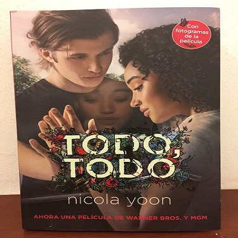

 Categoria: Romance Duracion : 96 minutos Año : 2017 Director: Stella Meghie Pais: Estados Unidos Sinopsis: Madeline, una adolescente que vive completamente aislada del mundo exterior porque es alérgica a todo, se enamora de Olly, su vecino de la puerta de al lado.